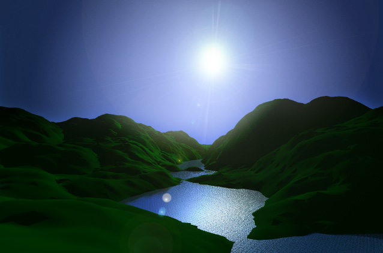

レリーフオブジェクトレリーフオブジェクトは、望むような影響を好きなように調整できるという点では、大変まっさらなオブジェクトであるでしょう。これはパラメトリックオブジェクトであるので、レリーフオブジェクトのパラメータを変更し、どのようにそれらが表面に影響するのかを確認する事が可能です。 レリーフオブジェクトは、コンピューターゲームの開発や屋外のシーン作成用に、即席のランドスケープを作成する大変便利なオブジェクトです。 レリーフは内蔵されたランダムなテクスチャ生成と等高線描画ルーチンを提供しているので、レリーフオブジェクトのプロパティを使って、大変複雑で詳細な結果を作成する事が可能です。下のイメージは、ランドスケープ用の１つのレリーフと、水面用の１つの平面を使用して作成されています。太陽のために１つのライトと、空は大変大きな球体で作成しています。Photoshop で最終的に、レンズフレアや空のもやなどを後で入れています。  プロパティ
|